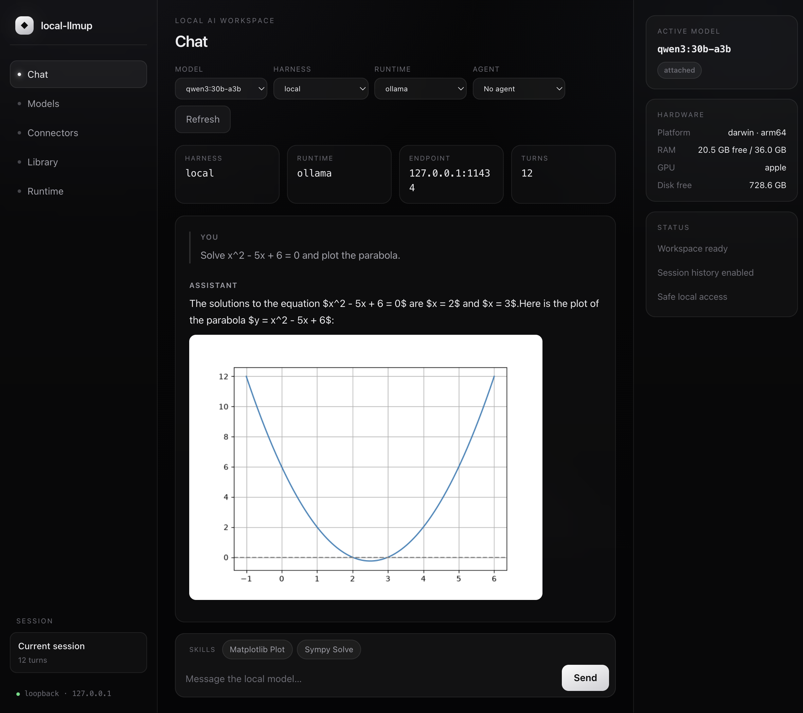
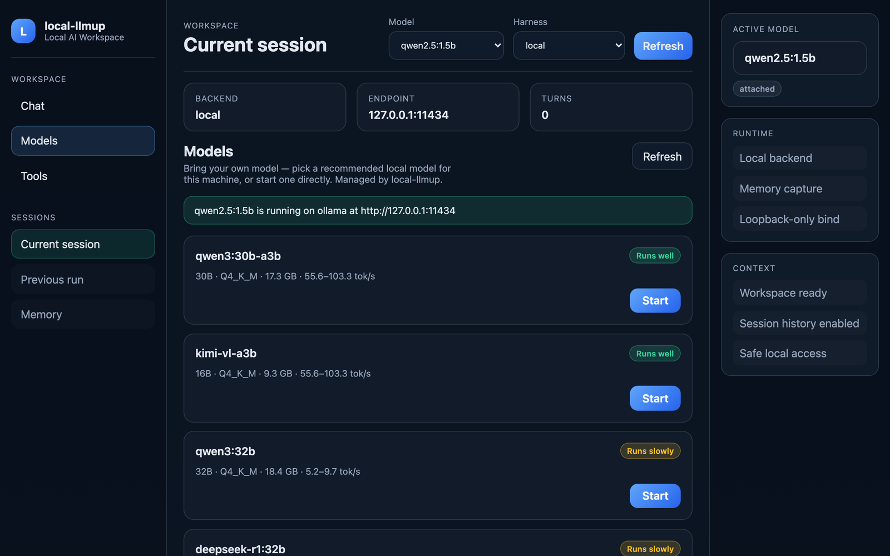
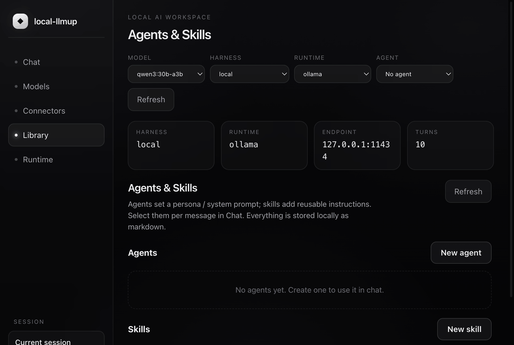
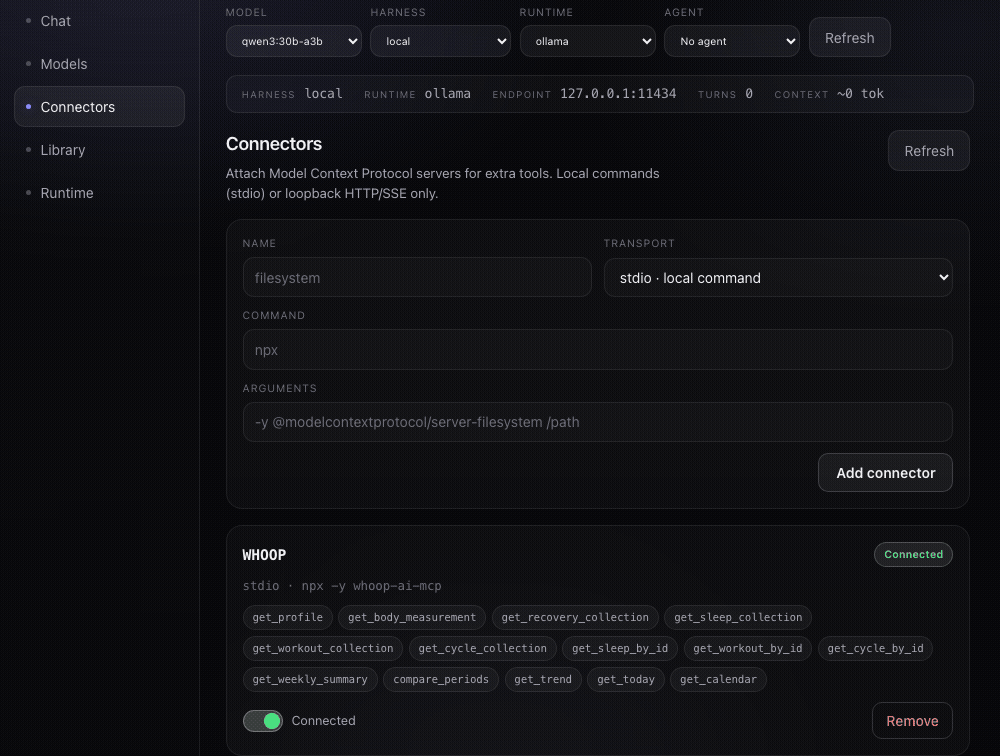
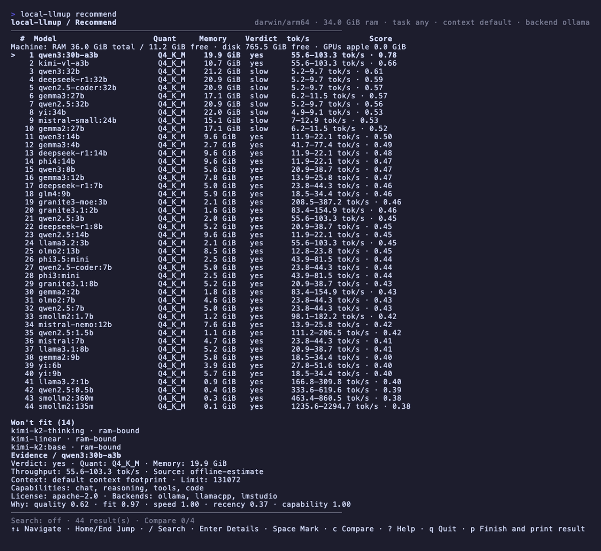
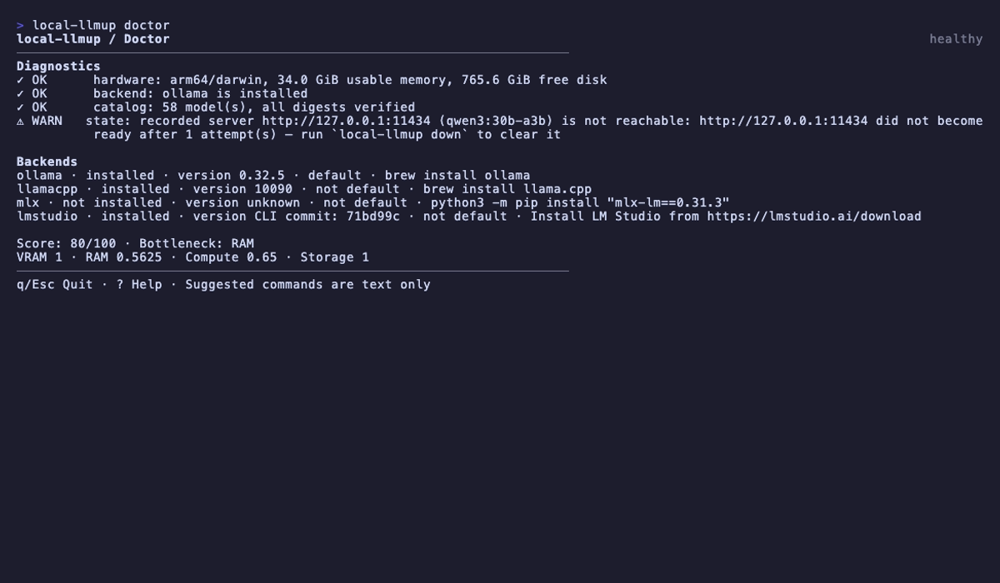
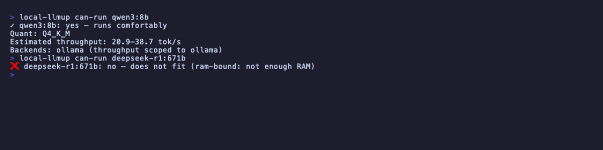
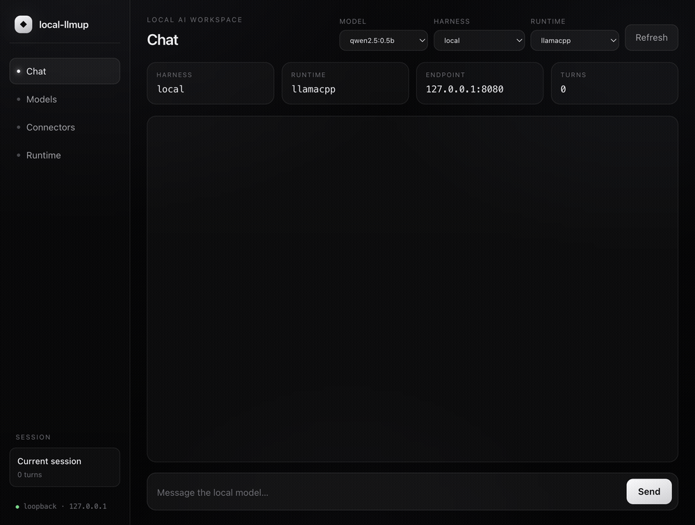
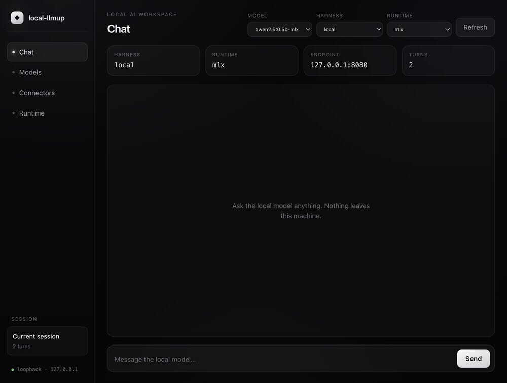
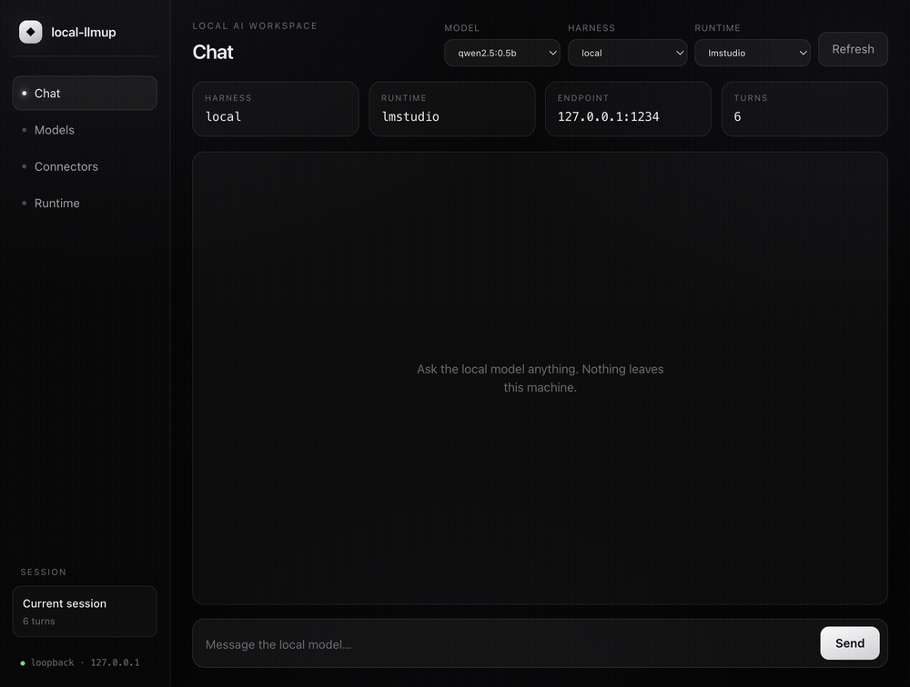

Hardware-accurate verdicts
An AI Hardware Score (0–100) names your bottleneck. Every model in the catalog gets a yes / slow / no verdict with est. tok/s — before any download. Unknown figures render as unknown, never fabricated.
A hardware-aware CLI that scores your machine and gives every model a straight answer — yes, slow, or no, with an estimated tok/s range — before you download a thing. Then it pulls, serves, chats, and migrates memory, all locally.

From hardware profiling to integrity-verified installs, interactive TUI to portable memory — a complete local-LLM workflow in one CLI.
An AI Hardware Score (0–100) names your bottleneck. Every model in the catalog gets a yes / slow / no verdict with est. tok/s — before any download. Unknown figures render as unknown, never fabricated.
Run local-llmup gui for a loopback-only local AI workspace — a Maka-inspired interface that reuses the same recommend, up, and ls internals. Pick a recommended model, bring one online, and chat — all in your browser.
A full Ink-rendered TUI activates automatically in capable terminals — searchable model list, keyboard navigation, doctor dashboard, real-time lifecycle progress. Falls back to plain text in CI or piped mode.
Ollama, llama.cpp, MLX (Apple Silicon), and LM Studio — auto-selected or user-chosen. All bind 127.0.0.1 only. Override with --backend.
SHA-256 digest checks on every pull. The up and switch commands fail closed on any mismatch — no silently corrupt weights.
KV-cache-aware memory math with GQA-correct attention geometry. Pass --context N to re-rank at a given window, or --max-context for each model’s ceiling.
Build reusable agents (personas / system prompts) and skills (instruction blocks) right in the workspace — stored locally as markdown. Bundle skills into an agent and load them per message from a dropdown.
Attach Model Context Protocol servers — local stdio commands or loopback HTTP/SSE — to give the chat real tools. Enable, disable, and inspect each connector’s tools; the model calls them in an agentic loop.
Let an agent run code in your workspace and render the result — the chat panel displays generated images and graphs inline, served safely from a loopback-only artifacts endpoint.
Prefer point-and-click? local-llmup gui launches a Maka-inspired, local-first workspace on 127.0.0.1 — and manages models through the very same engine as the CLI. Bring your own model by picking a recommended local model for your machine, or start one directly, then chat. Nothing leaves your machine.

Prefer an app in your Dock over a browser tab? The desktop build wraps the exact same loopback Runtime Host in a hardened, native window. It boots the same GUI server the CLI serves, binds 127.0.0.1 only, ships zero Node integration in the renderer, and blocks any navigation off-loopback. Same engine, same verdicts, same privacy — now one click away.
.dmg · 119 MB
Download
Windows
x64 installer · .exe
via Releases
Linux
AppImage · x64
via Releases
macOS (Apple Silicon) downloads the .dmg directly — it's unsigned, so right-click ▸ Open on first launch. Windows & Linux builds publish to GitHub Releases as CI produces them — or build any target from source:
git clone https://github.com/shashankswe2020-ux/local-llmup
cd local-llmup/apps/desktop
npm install && npm start # run the app
npm run package:mac # or :win / :linuxBuild an agent (a persona / system prompt), give it reusable skills, and connect tools that run code in your workspace. Select the agent in chat and its skills load automatically — here it solves a quadratic with SymPy, plots it with Matplotlib, and renders the graph right in the panel. Everything stays on 127.0.0.1.

Attach Model Context Protocol servers to the workspace — local stdio commands or loopback HTTP/SSE only. Enable a connector and its tools become available to the model, which calls them in an agentic loop. Below: a WHOOP connector is added, toggled on, and its health tools are used live in chat.

Advice commands make zero network calls and use a curated, cited, offline dataset. Servers bind 127.0.0.1. Weights are integrity-verified and fail closed. Your conversations stay on your machine.
v0.6 brings a full Ink 5 + React 18 terminal UI that activates automatically when your terminal is ≥60×16. Screen-reader accessible mode and plain-text fallback always available.



Node.js 18+. No API keys, no cloud accounts. For lifecycle commands you need at least one backend — Ollama is the recommended default.
npm install -g local-llmupOr try without installing: npx local-llmup
local-llmupInteractive TUI opens in a capable terminal. Ranked models with verdicts and est. tok/s.
local-llmup can-run qwen3:8bInstant yes / slow / no verdict with est. tok/s. Works as a CI gate.
local-llmup up qwen3:8bIntegrity-verified pull via Ollama, then a loopback-only server endpoint.
local-llmup chatMulti-line input, streaming responses, session recorded to local memory.
local-llmup migrate --from qwen3:8b --to qwen3:14bCarry conversation memory when upgrading models. No data left behind.
Every command supports --json for machine-readable output and --help for usage. Advice commands make zero network calls.
--task, size context with --context N.--dry-run.Auto-selected based on your platform and installed runtimes. Override with --backend. All bind 127.0.0.1 only.
Managed daemon. Recommended default. Handles pull, serve, and stop.
Full lifecycleSelf-managed GGUF with HuggingFace acquisition. Maximum control.
Full lifecyclemlx-lm Python package. Preferred on Apple Silicon when installed.
Full lifecycleAttach-only — user manages the server, llmup attaches.
Attach-onlyA backend picker in the workspace lets you reach every runtime directly — the same model chatting locally through Ollama, llama.cpp, MLX, and LM Studio.



Ollama is an excellent runtime. local-llmup adds the hardware-aware intelligence layer on top of it (and three other runtimes).
| Feature | Ollama | local-llmup |
|---|---|---|
| Run inference | ✓ | ✓ |
| Hardware-aware model recommendations | – | ✓ |
| yes / slow / no verdicts + est. tok/s | – | ✓ |
| AI Hardware Score (0–100) | – | ✓ |
| Context-window sizing (KV-cache aware) | – | ✓ |
| Interactive terminal UI | – | ✓ |
| Browser GUI (loopback-only workspace) | – | ✓ |
| Agents & skills library | – | ✓ |
| MCP connectors & tools | – | ✓ |
| Inline images & graphs in chat | – | ✓ |
| Accessible mode (screen readers) | – | ✓ |
| Multi-backend (4 runtimes) | – | ✓ |
| SHA-256 integrity verification | – | ✓ |
| Portable memory migration | – | ✓ |
| Offline deterministic advice | – | ✓ |